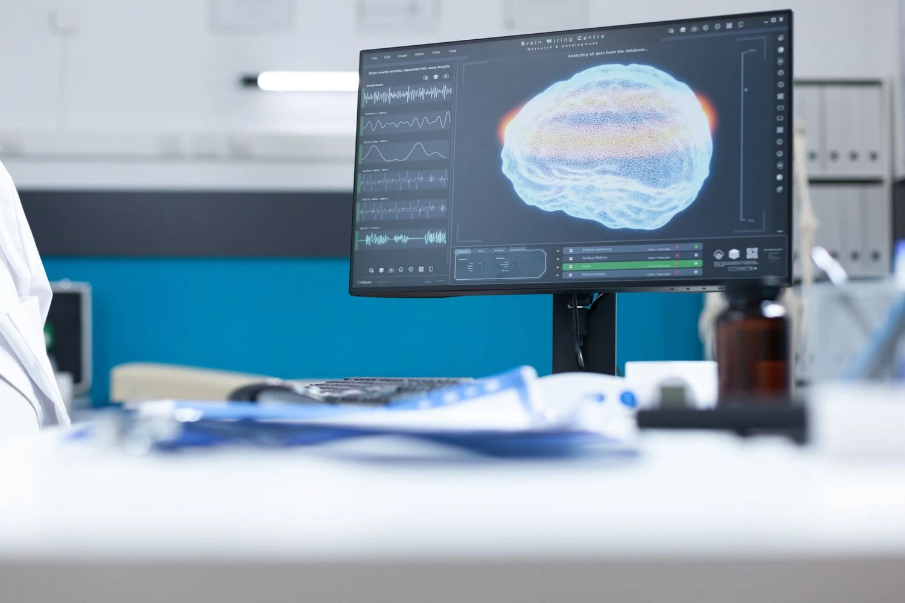

Your doctor hands you a referral for an MRI scan. The first thing you do is search: cheapest MRI scan near me and what comes back is a confusing list of prices ranging from surprisingly low to shockingly high, with no clear explanation of why. You are not alone. The cost of MRI scan is one of the most searched and least understood topics in patient healthcare, and the variation in MRI test price across scanning centres near me in Madurai is real, significant, and not always honest. This guide cuts through the confusion explaining exactly why the cost of MRI scan varies, what hidden charges to watch for, how hospital MRI prices compare to standalone scanning centres near me, and what questions to ask before you pay. At Meera 4D Scans Madurai, our commitment is simple: the cheapest MRI scan near me that you can actually trust transparent MRI test price, same-day results, no surprises. Book your appointment today.
Why Does the Cost of MRI Scan Vary So Much?
If you have compared the MRI test price across scanning centres near me in Madurai, you will have noticed significant differences sometimes for the same body part. This is not random. The cost of MRI scan at any given centre reflects several real factors, some of which directly affect your care and some of which are simply overhead costs passed on to you as the patient.
Legitimate Reasons the MRI Test Price Differs
- Machine quality and age a newer, higher-field MRI machine costs significantly more to purchase and maintain. A centre investing in a modern 1.5 Tesla machine will necessarily have a higher base MRI test price than one running older, lower-field equipment and the image quality difference is clinically significant
- In-house vs outsourced radiologist centres that employ qualified radiologists on-site to read and report every scan provide far more clinical value than those that outsource reporting to remote third parties. In-house reporting costs more to maintain but produces better reports for your doctor
- Report depth and structure a detailed, structured, subspecialty-level radiologist report takes significantly more time and expertise to produce than a brief generic summary. The cost of MRI scan at quality centres reflects this investment
- Protocol completeness a full clinical protocol with multiple sequences (e.g., T1, T2, FLAIR, DWI for a brain MRI) provides far more diagnostic information than a reduced protocol. The head MRI scan cost should always be assessed alongside how many sequences are included
Unjustified Reasons the MRI Test Price Is Higher
- Hospital facility fees large hospital chains add institutional overhead charges, administrative fees, and profit margins to every investigation. The cost of MRI scan at a hospital is often 2–3 times higher than at an equivalent-quality standalone scanning centre near me for no clinical benefit to the patient
- Brand premium some centres charge a higher MRI test price simply because of their brand name or corporate ownership, not because of superior equipment or radiologist quality
- Location markup centres in premium commercial areas add real-estate costs to their cost of MRI scan. A well-run scanning centre near me in a well-located but non-premium area like Meera 4D Scans Madurai passes those savings directly to patients
At Meera 4D Scans Madurai, our MRI test price reflects genuine investment in quality equipment and expert radiologists not hospital markups or brand premiums. We are the cheapest MRI scan near me in Madurai that you can confidently compare against any competitor on quality, not just price.
Hidden Charges That Inflate the Cost of MRI Scan
One of the biggest frustrations patients face when searching for scans near me in Madurai is discovering that the quoted MRI test price is not what they actually pay. Hidden charges are common across the diagnostic industry here is exactly what to watch for before you book:
Common Hidden Charges at Scanning Centres Near Me
| Hidden Charge | What It Means | At Meera 4D Scans |
|---|---|---|
| Separate report fee | Radiologist report charged on top of scan price | Report included in MRI test price |
| Film / CD charge | Printed films or digital images charged separately | Digital images included no extra charge |
| Contrast agent fee | Gadolinium contrast quoted separately after scan | Contrast cost communicated upfront before booking |
| Registration / consultation fee | Administrative fee added on arrival | No hidden registration charges |
| Urgent reporting surcharge | Extra fee for same-day results | Same-day results standard no surcharge |
| Re-scan fee | Charged again if scan quality is insufficient | High-quality machine minimises repeat scans |
When comparing the cost of MRI scan across scanning centres near me, always ask for the all-inclusive MRI test price the total you will pay when you walk out the door, including the report, images, and any contrast required. At Meera 4D Scans Madurai, that number is what we quote you from the start.

Hospital MRI vs Scanning Centres Near Me Cost Comparison
A question we hear frequently at Meera 4D Scans Madurai is: should I get my MRI at a hospital or at a standalone scanning centre near me? For most patients, the answer from both a cost and quality perspective is a well-run standalone diagnostic centre. Here is why:
Hospital vs Standalone Scanning Centre Comparison
- Cost of MRI scan hospitals typically charge 2–4 times more than equivalent standalone scanning centres near me due to facility fees, administrative overhead, and institutional profit margins built into every service
- Appointment availability hospitals frequently have waiting periods of several days to weeks for non-emergency MRI appointments. Independent scans near me centres like Meera 4D Scans Madurai offer same-day and next-day availability for most MRI scans
- Result turnaround hospital radiology departments serving large patient volumes often take 24–72 hours to report scans. Dedicated scanning centres near me focussed exclusively on diagnostic imaging typically deliver same-day reports as standard
- Patient experience a standalone scanning centre near me dedicated to diagnostic imaging provides a quieter, more focused environment than a busy hospital radiology department
- MRI machine quality machine quality is not exclusive to hospitals. The best standalone scanning centres near me invest in the same 1.5 Tesla or higher MRI technology used in leading hospitals, at a fraction of the cost of MRI scan to the patient
Questions to Ask Before Booking Any MRI Scan
Whether you are searching for the cheapest MRI scan near me or simply trying to find the best value among scanning centres near me in Madurai, asking the right questions before booking protects you from disappointment and unexpected costs. Here is the complete list of questions every patient should ask:
Your Pre-Booking Checklist
- "What is the all-inclusive cost of MRI scan including report, images, and contrast if needed?" never accept a headline price without confirming what is excluded
- "What Tesla MRI machine do you use?" insist on 1.5 Tesla or higher. Anything lower significantly compromises image quality and may affect your diagnosis
- "Is the radiologist report prepared in-house or outsourced?" in-house reporting by an experienced radiologist produces a far more useful, clinically detailed report for your doctor
- "How quickly will I receive my MRI report?" same-day results should be standard at the best scans near me centres. Delays of more than 24 hours are not acceptable for most clinical situations
- "Is the head MRI scan cost different if contrast is required?" contrast significantly changes the head MRI scan cost. Confirm this before your appointment if your referral mentions contrast MRI
- "Are there any additional charges I should be aware of?" a trustworthy scanning centre near me will answer this clearly and completely with nothing left ambiguous
At Meera 4D Scans Madurai, every one of these questions is answered openly and completely before you book. Our MRI test price is all-inclusive, our machine meets the 1.5 Tesla standard, our radiologists are experienced and on-site, and our reports are ready the same day making us the most straightforward choice for the cheapest MRI scan near me in Madurai.

What Does a Good MRI Report Look Like?
The cost of MRI scan does not end with the scan itself the report is equally important. Many patients receive their MRI images but are confused by a brief or poorly structured report that their doctor finds difficult to act on. Understanding what a good MRI report includes helps you evaluate whether the MRI test price you paid genuinely reflected quality reporting.
Features of a High-Quality MRI Report
- Clinical history section a good report begins by acknowledging the patient's symptoms and reason for referral, ensuring the findings are interpreted in context rather than in isolation
- Technique description details of the sequences performed, whether contrast was used, and the plane of imaging confirming the scan was performed to the appropriate protocol
- Systematic findings a structured, section-by-section description of the normal and abnormal findings covering every relevant anatomical structure not just the pathology
- Measurements quantitative data such as lesion size, disc height, chamber dimensions, or tumour measurements give your doctor objective data for treatment planning
- Differential diagnosis where appropriate, the radiologist provides a ranked list of possible diagnoses based on the imaging findings, helping your doctor narrow down the clinical picture efficiently
- Clear impression and recommendation a concise summary of the key findings and, where relevant, a recommendation for follow-up imaging or clinical correlation
At Meera 4D Scans Madurai, every MRI report included in our cost of MRI scan meets all of the above standards. When you search for scans near me and choose us, you are not just getting an image you are getting a clinical document your doctor can immediately act on.
Your Doctor Said MRI What to Do Next
Many patients are unsure of the practical steps between receiving an MRI referral and getting their results. Here is the straightforward step-by-step process at Meera 4D Scans Madurai one of the most accessible scanning centres near me in Madurai:
Call or Book Online
Contact Meera 4D Scans Madurai by phone or through our website. Tell us which body part needs scanning and share your referral details. We will confirm the MRI test price fully inclusive no surprises and find you the earliest available slot, often same-day.
Confirm Your MRI Test Price
Before arriving, we confirm the complete, all-inclusive cost of MRI scan for your specific examination including report, images, and contrast if required. No ambiguity, no hidden charges waiting on the other side of the appointment.
Arrive & Prepare
Arrive at our centre, complete a brief registration and safety check. For most scans including head MRI scan, no fasting is needed. Our team prepares you calmly and professionally, explaining every step before it happens.
Scan Performed
Your MRI scan is performed on our high-field machine by an experienced radiographer following the complete clinical protocol your doctor requested. The scan is painless and typically takes 20–45 minutes depending on the body part.
Same-Day Report Take to Your Doctor
Your complete, detailed MRI report is ready the same day included in the cost of MRI scan you were quoted at booking. Take it straight to your referring doctor for immediate clinical action. No waiting. No follow-up calls. No extra charges.
Red Flags When Choosing Scanning Centres Near Me
Not all scanning centres near me in Madurai operate to the same standard. As you research the cheapest MRI scan near me, watch out for these warning signs that a low MRI test price may come at a clinical cost:
Warning Signs to Watch For
- No information about machine Tesla strength any reputable scanning centre near me should clearly state the MRI machine specification. Vagueness here usually means lower-field equipment
- Report turnaround of more than 48 hours same-day or next-day reporting is the standard for quality scans near me. Longer delays suggest outsourced or under-resourced radiology
- Headline MRI test price that excludes the report a quoted cost of MRI scan that does not include the radiologist report is misleading. Always ask for the all-in price before comparing centres
- Pressure to add unnecessary sequences or contrast upselling on the day of your appointment is a sign that the headline MRI test price was not honest. At Meera 4D Scans Madurai, every sequence is clinically justified and agreed before the scan
- Unusually low head MRI scan cost with no explanation a head MRI scan cost that is dramatically below market rate without a clear reason (subsidised scheme, government tie-up, etc.) almost always reflects a compromise in machine quality, protocol completeness, or report depth
Why Meera 4D Scans is the Cheapest MRI Scan Near Me You Can Trust
Meera 4D Scans Madurai is trusted by thousands of patients across Madurai as their preferred scanning centre near me for MRI and all diagnostic imaging. Here is what makes us genuinely different from the other scanning centres near me competing for your appointment:
- Fully transparent cost of MRI scan the price we quote is the price you pay. No hidden report fees, no film charges, no contrast surprises, no registration add-ons
- Genuinely the cheapest MRI scan near me in Madurai competitive pricing achieved through operational efficiency, not by cutting corners on machine quality or reporting standards
- Affordable head MRI scan cost neurological imaging accessible to every patient in Madurai regardless of budget, with no reduction in protocol quality
- High-field MRI machine maximum diagnostic accuracy for every body region, meeting the 1.5 Tesla clinical standard
- Same-day detailed reports by experienced, on-site radiologists. Included in the MRI test price as standard
- Complete diagnostic range MRI, ultrasound, 4D pregnancy scans, ECHO, PCOS, TIFFA, Doppler and more. Everything you need from scans near me under one roof in Madurai
- Trusted by 10,000+ patients in Madurai for consistent quality, transparent pricing, and genuine care
You deserve a scanning centre near me that is honest about the cost of MRI scan before you arrive, not after. Stop overpaying at hospitals and stop risking quality at unknown centres. The cheapest MRI scan near me that genuinely delivers is right here. Book your MRI scan at Meera 4D Scans Madurai today same-day appointments available, transparent MRI test price, and results ready before you leave.
Useful Resources
These trusted health and medical resources provide additional information about MRI scanning, patient rights in diagnostic imaging, and healthcare quality standards.
-
WHO Medical Imaging & Diagnostic Radiology World Health Organization guidance on quality, safety, and equitable access to medical imaging and diagnostic radiology services globally.
-
National Health Portal India Diagnostic Tests India's official health portal covering patient rights, diagnostic test guidelines, and MRI safety information.
-
NCBI MRI Safety, Quality & Clinical Standards Peer-reviewed research on MRI quality standards, reporting guidelines, and cost-effectiveness in diagnostic imaging practice.